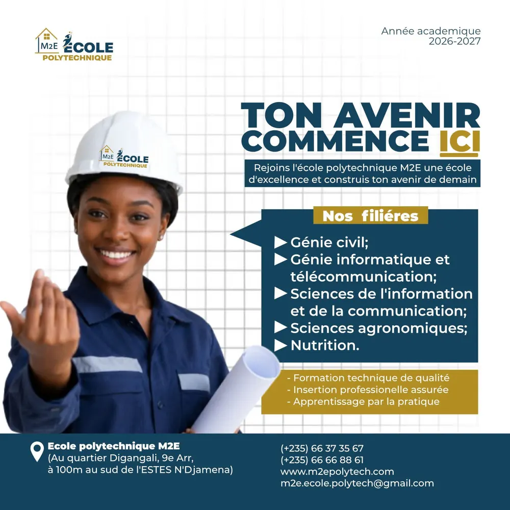
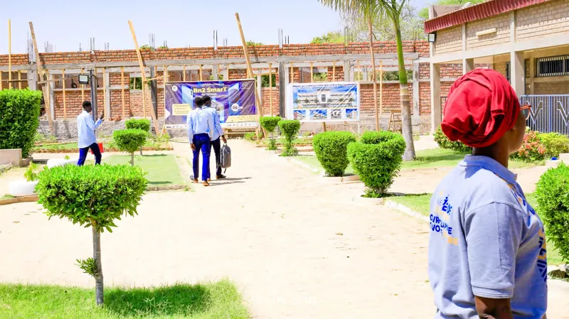
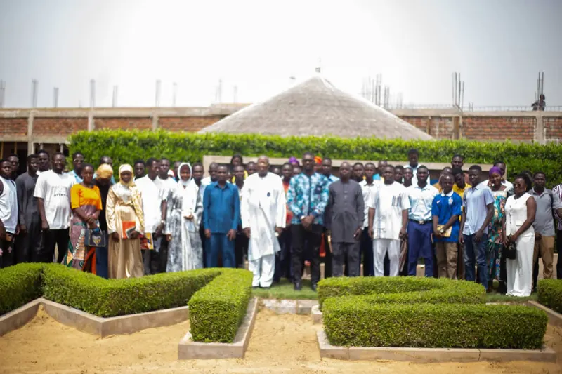
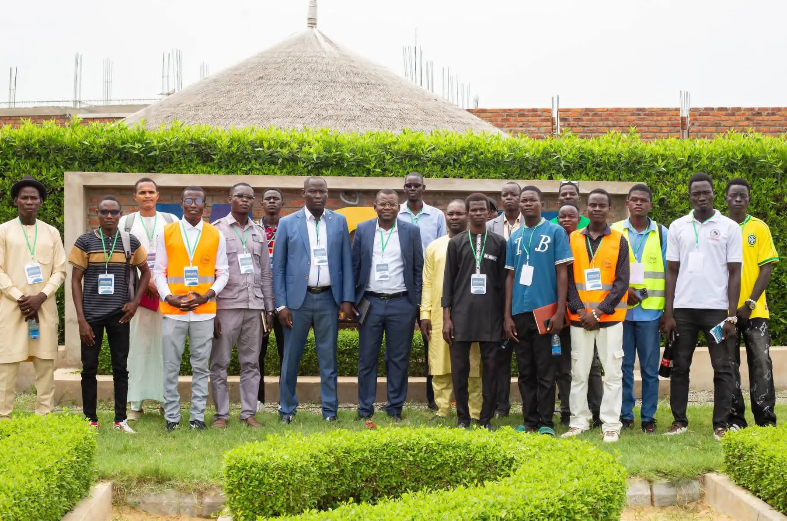
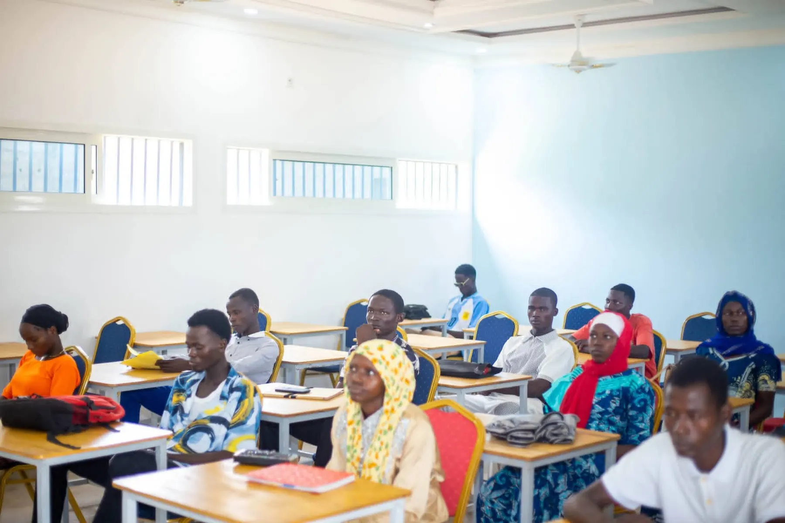

À la une · Communiqué
Rentrée 2026-2027 : les inscriptions sont ouvertes
M2E École Polytechnique ouvre les inscriptions dans ses cinq filières pour l'année académique 2026-2027.
Communiqués officiels, événements, vie étudiante et galerie photos de M2E École Polytechnique.
M2E École Polytechnique ouvre les inscriptions dans ses cinq filières pour l'année académique 2026-2027.
M2E École Polytechnique ouvre les inscriptions dans ses cinq filières pour l'année académique 2026-2027.
Lire la suite
ArticleFormation technique de qualité, insertion professionnelle et apprentissage par la pratique : les trois engagements de l'école.
Lire la suite
CampusUn nouveau bâtiment est en cours de construction sur le campus pour accompagner le développement de l'école.
Lire la suiteLe campus a accueilli visiteurs et étudiants autour de l'équipe de l'école, devant le jardin M2E.
Lire la suite
Vie étudianteÉtudiants, encadrement et invités réunis pour une photo de famille devant le célèbre jardin en forme de « M2E ».
Lire la suite Vie étudiante
Vie étudianteDes salles de cours lumineuses et équipées, où les étudiants suivent leurs enseignements dans de bonnes conditions.
Lire la suiteM2E École Polytechnique annonce l'ouverture des inscriptions pour l'année académique 2026-2027. « La rentrée approche, es-tu prêt ? » : l'école invite les bacheliers à ne pas laisser passer leur chance et à préparer leur avenir dès aujourd'hui.
Cinq filières sont proposées : Génie civil ; Génie informatique, réseaux et télécommunications ; Sciences agronomiques ; Sciences de l'information et de la communication ; Nutrition.
Les candidatures peuvent être déposées au campus, quartier Digangali (9e arrondissement), à 100 m au sud de l'ESTES, ou en ligne via la page Admissions.
« Rejoins l'école polytechnique M2E, une école d'excellence, et construis ton avenir de demain. » Avec ce message, l'école présente ses cinq filières et ses trois engagements : une formation technique de qualité, l'insertion professionnelle et l'apprentissage par la pratique.
Chaque filière est construite autour de débouchés concrets : ingénieurs en bâtiment et travaux publics, développeurs et administrateurs réseaux, agronomes et conseillers agricoles, journalistes et chargés de communication, diététiciens et nutritionnistes.
Le campus de M2E École Polytechnique vit au rythme d'un important chantier : le projet de construction d'un nouveau bâtiment, dont la perspective est affichée à l'entrée du chantier, est en cours.
Ce projet accompagne le développement de l'école et l'accueil de nouvelles promotions d'étudiants. Une belle illustration, au cœur même du campus, des métiers enseignés en Génie civil.

Badges « Visiteur » et « Étudiant » au cou, participants et membres de l'équipe de l'école se sont retrouvés sur le campus de M2E École Polytechnique pour un moment d'échange, immortalisé devant les jardins de l'école.
Ces rencontres permettent aux futurs étudiants et à leurs familles de découvrir le cadre de formation et de poser leurs questions directement à l'équipe.
Étudiants, membres de l'encadrement et invités se sont rassemblés pour une grande photo de famille devant le jardin taillé aux lettres de l'école, l'un des lieux emblématiques du campus.
Un moment qui reflète l'esprit de communauté que l'école souhaite cultiver entre ses étudiants, ses enseignants et ses partenaires.

Salles claires, ventilées et équipées de mobilier neuf : les étudiants de M2E École Polytechnique suivent leurs enseignements dans un cadre pensé pour la concentration et le travail.
Une étape du quotidien qui complète l'apprentissage par la pratique, au cœur de la pédagogie de l'école.